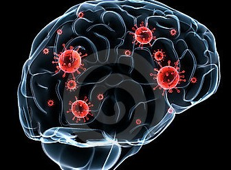
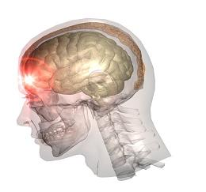
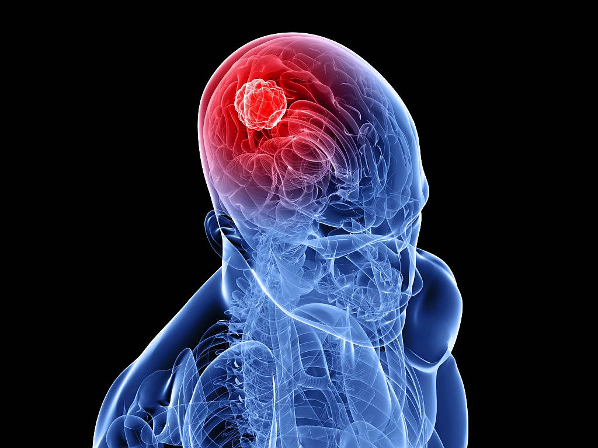
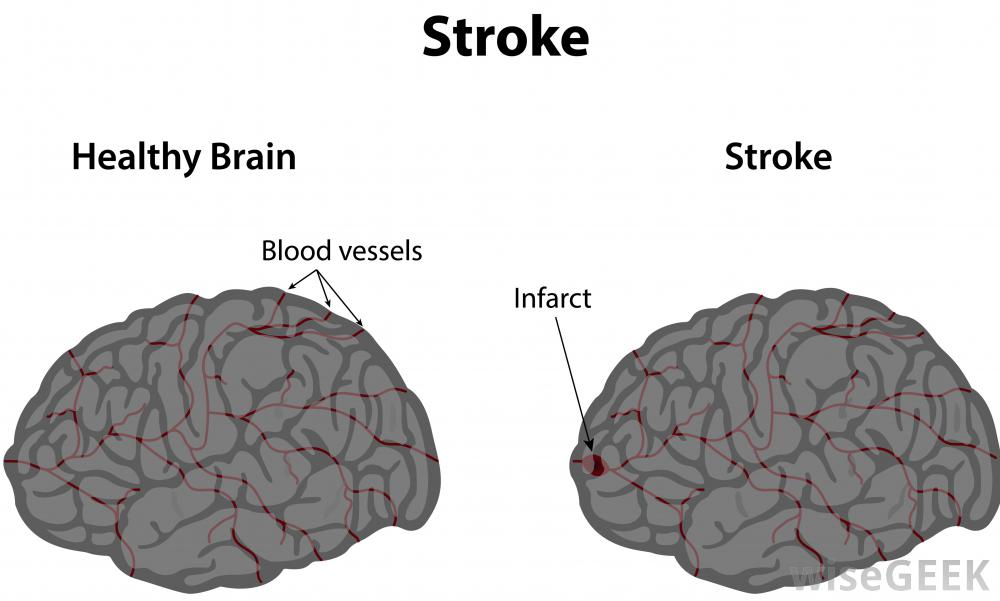
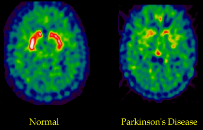

Common Diseases
There are different forms of Brain diseases. Common categories include infections, taruma, stroke, seizures and tumors. The following is an overview of various diseases of the brain.
Infections
- Meningitis
- An inflamation of the lining around the brain or spinal cord, usually due to infections. Common symptoms include fever, headache, stiff neck and confusion.
- Encephalitis
- An inflamation of the brain tissue, usually due to viral infection. This usually occurs along with meningitis which is called meningoencephalitis.
Trauma
- Concussion
- A brain injury that causes a temporary disturbance in brain function, sometimes with unconsciousness and confusion; traumatic head injuries cause concussions and may result in headache, along with concentration and memory problems.
- Intracerebral Hemorrhage
- Any bleeding inside the brain, which may occur after a traumatic injury or stroke as a result of high blood pressure
Tumors, Masses and Increased Pressure
- Brain Tumor
- Any abnormal tissue growth inside the brain; whether malignant (cancerous) or benign, brain tumors usually cause problems by the pressure they exert on the normal brain.
- Hydrocephalus
- An abnormally increased amount of cerebrospinal (brain) fluid inside the skull; usually, this is because the fluid is not circulating properly.
- Normal Pressure Hydrocephalus
- A form of hydrocephalus that often causes problems with walking, along with dementia and urinary incontinence; pressure inside the brain remains normal, despite the increased fluid.
Vascular Conditions
- Stroke
- Blood flow and oxygen are suddenly interrupted to an area of brain tissue, which then may die. The body part controlled by the damaged brain area (such as an arm or a leg) may no longer function properly.
- Transient Ischemic Attack (CVA)
- A temporary interruption of blood flow and oxygen to a part of the brain; symptoms are similar to those of a stroke, but they resolve completely (usually within 24 hours) without damage to brain tissue.
- Brain Aneurysm
- An artery in the brain develops a weak area that swells like a balloon. A brain aneurysm rupture causes a stroke, due to bleeding.
Autoimmune Conditions

- Multiple Sclerosis (MS)
- The immune system mistakenly attacks and damages the body's own nerves. Muscle spasm, fatigue, and weakness are symptoms. MS may occur in periodic attacks or be steadily progressive.
Neurodegenerative Conditions
- Parkinson's Disease
- Nerves in a central area of the brain degenerate slowly, causing problems with movement and coordination. Early signs are a tremor of the hands, stiffness of the limbs and trunk, slowness of movement, and unstable posture.
- Huntington's Disease
- An inherited nerve disorder that causes a degeneration of brain cells; dementia and difficulty controlling movements (chorea) are its symptoms. Early signs include mood swings, depression, and irritability.
- Amyotrophic lateral sclerosis (ALS)
- ALS is also called Lou Gehrig's disease. In ALS, nerves controlling muscle function are steadily and rapidly destroyed. ALS steadily progresses to paralysis and inability to breathe without mechanical assistance. Cognitive function is generally not affected
- Alzheimer's
- For unclear reasons, nerves in certain brain areas degenerate, causing progressive loss of memory and mental function, and changes in behavior and personality. The buildup of abnormal tissue in brain areas -- often called tangles and plaques -- is believed to contribute to the disease. Alzheimer's disease is the most common form of dementia. Most common in old people.